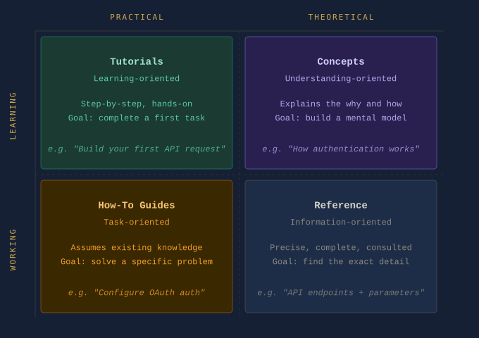

Part 6: Documentation Architecture for Technical Writers¶
This page is part of the Git and GitHub for Technical Writers series. If you are joining mid-series, start at the Home page.
With CI/CD pipelines in place, documentation is written, versioned, validated, and deployed automatically. The operational infrastructure is complete.
But one critical layer still remains.
Even with perfect commits, clean Pull Requests, and automated deployment, documentation can still fail if the information itself is poorly structured.
This is where documentation architecture becomes essential.
Documentation is not just content. It is an information system. And like any system, it must be designed to scale.
Why structure matters¶
In the early stages of a project, documentation often begins simply. A few guides. A quick start page. Some API notes.
But as the product grows, something predictable happens.
Pages accumulate. Topics overlap. Old information remains alongside new information. Guides multiply without clear ownership.
This gradual decay is called documentation entropy.
Symptoms include:
- Duplicate pages explaining the same concept
- Outdated tutorials that no longer match the product
- Conflicting instructions across different guides
- Navigation that feels chaotic rather than intentional
Developers have a familiar term for this in codebases: technical debt. Documentation suffers from something similar: information debt.
The root cause is rarely bad intentions. It is missing architecture.
Information debt compounds the same way technical debt does. The longer it goes unaddressed, the more expensive it becomes to fix.
Documentation as an information system¶
When documentation is treated as a simple collection of pages, it becomes difficult to maintain.
When it is treated as an information system, the focus shifts from writing individual pages to designing how information is organised and accessed.
A well-structured documentation system supports four fundamental needs:
- Discoverability: users must be able to find information quickly
- Navigation: readers should move through documentation logically
- Task completion: documentation must guide users toward real outcomes
- Learning progression: readers should be able to deepen their understanding over time
These goals cannot be achieved through writing quality alone. They require intentional architecture.
A well-written page inside a poorly designed system is still a page readers cannot find.
The Diataxis framework¶
One of the most widely adopted models for structuring documentation is the Diataxis framework. It separates documentation into four distinct types, each serving a different reader need.
| Documentation type | Purpose |
|---|---|
| Tutorials | Teach beginners step-by-step |
| How-to guides | Help users accomplish specific tasks |
| Reference | Provide precise technical details |
| Concepts | Explain how the system works |

Tutorials¶
Help readers learn by doing.
Example: "Build your first API request in five minutes."
A tutorial is not concerned with completeness. It is concerned with forward momentum. The reader should finish having done something and feeling capable of continuing.
How-to guides¶
Help readers solve specific practical problems.
Example: "How to configure OAuth authentication."
A how-to guide assumes the reader already has basic knowledge. It does not teach fundamentals. It solves a defined problem efficiently.
Reference¶
Provides exact technical information.
Example: API endpoints, parameters, command syntax, configuration options.
Reference documentation is consulted, not read from start to finish. Precision and completeness matter more than narrative flow.
Concepts¶
Explains how the system works internally.
Example: "How authentication works in our API architecture."
Conceptual documentation gives readers the mental model they need to use the product confidently. It answers the question: how does this work and why?
Why separation matters¶
These documentation types should not be mixed together.
A tutorial should not suddenly become a reference manual. A reference page should not read like a tutorial.
Each serves a different reader mindset. When readers arrive at a page, they come with a specific intent. If the page serves a different intent, they leave without completing their task.
Architecture makes those boundaries clear and keeps readers oriented.
Without those boundaries, documentation grows in the wrong directions. Tutorials become reference manuals. Reference pages become tutorials. Readers arrive at the right page for the wrong reason and leave without completing their task.
Structuring a repository¶
In Docs-as-Code environments, documentation lives inside the same repository as the product. A clear structure based on the Diataxis framework looks like this:
docs/
├── tutorials/
│ └── getting-started.md
├── guides/
│ └── configure-authentication.md
├── reference/
│ └── api-endpoints.md
├── concepts/
│ └── how-authentication-works.md
├── snippets/
│ └── auth-prerequisites.md
└── images/
└── architecture-diagram.png
This layout provides several benefits:
- Writers know where new documentation belongs
- Reviewers understand the purpose of each page before reading it
- Documentation site generators can build navigation automatically
- Readers can locate the type of information they need without searching
Structure does not constrain documentation. It makes documentation possible to maintain.
Single Source of Truth¶
One of the core principles in software engineering is DRY, short for Don't Repeat Yourself. The same principle applies to documentation.
In large documentation sets, certain content appears repeatedly: warning notices, prerequisites, configuration steps, code snippets. When this content is copied manually, a predictable problem follows. The product changes, one copy gets updated, and the others do not. Readers encounter conflicting information depending on which page they land on.
Good architecture solves this through content inclusions, writing content once and referencing it from multiple pages.
Example using the MkDocs snippets extension:
<!-- In guides/configure-authentication.md -->
## Prerequisites
<!-- In tutorials/getting-started.md -->
## Before You Begin
Both pages display the same prerequisites block. When the prerequisites change, you update one file and every page that references it updates automatically.
This is one of the most practical benefits of treating documentation as code.
One source of truth means one place to fix when the product changes. That is what makes documentation maintainable at scale.
The README as the front door¶
The README.md at the root of your docs/ folder is the most important piece of documentation architecture for contributors.
For readers, the homepage of your documentation site is the entry point. For writers and contributors, the docs/README.md is the front door to the documentation system itself.
A well-written docs README answers four questions:
- What is the structure of this repository?
- Where does new documentation belong?
- What conventions does this project follow?
- How do I contribute?
Example:
# Documentation
This folder contains all documentation for [Product Name].
## Folder Structure
| Folder | Purpose |
|--------|---------|
| `tutorials/` | Step-by-step guides for new users |
| `guides/` | Task-focused how-to guides |
| `reference/` | API and configuration reference |
| `concepts/` | Explanations of how the system works |
| `snippets/` | Reusable content blocks |
| `images/` | Screenshots and diagrams |
## Contributing
Before adding a new page, identify which category it belongs to.
See [CONTRIBUTING.md](../CONTRIBUTING.md) for full guidelines.
This file costs very little to write. For anyone joining the project later, an engineer contributing their first documentation page or a new technical writer onboarding, it is the difference between confidence and confusion.
A team that knows where things belong does not need to ask. That question never reaches a Pull Request.
Architecture improves collaboration¶
When structure exists:
- Engineers know where to contribute documentation
- Reviewers understand the context of a page before reading it
- Writers maintain consistency across large documentation sets
Without structure, teams debate basic questions before any writing begins: where should this page live, is this a guide or a tutorial, should this replace another page?
Architecture answers those questions before they arise. A structured repository functions as a shared agreement and that agreement reduces friction across every Pull Request.
The best Pull Request review is one where nobody has to debate where the page belongs or what it is for. Architecture makes that the default.
Architecture enables automation¶
Documentation tools such as MkDocs, Docusaurus, Sphinx, and Hugo depend on structured directories to generate navigation, build search indexes, validate internal links, and render documentation sites correctly.
Example using MkDocs navigation configuration:
nav:
- Home: index.md
- Tutorials:
- Getting Started: tutorials/getting-started.md
- How-To Guides:
- Configure Authentication: guides/configure-authentication.md
- Reference:
- API Endpoints: reference/api-endpoints.md
- Concepts:
- How Authentication Works: concepts/how-authentication-works.md
When the directory structure matches the navigation configuration, the pipeline builds correctly every time. When structure is inconsistent, automation breaks. Missing files, broken links, and failed builds become routine problems rather than rare exceptions.
Structure is not bureaucracy. It is the condition under which automation works reliably.
Practical exercise: audit your documentation¶
Before restructuring a project, understand the state of what already exists.
Step 1: List every page in your documentation.
Step 2: Categorise each page using the Diataxis framework.
For each file, ask: is this a tutorial, a how-to guide, a reference page, or a conceptual explanation? If it is difficult to categorise, the page may be mixing purposes.
Step 3: Identify gaps and overlaps.
Look for categories with no pages (a gap), multiple pages covering the same topic (an overlap), and pages that belong to more than one category (a mixing problem).
Step 4: Propose a new structure.
Sketch a folder structure that reflects the Diataxis framework. You do not need to migrate everything immediately. Architecture improvements can be made incrementally, one Pull Request at a time. A good-enough structure that exists is always more useful than a perfect structure that does not.
A note on internal linking:
When you restructure a repository, internal links can break. Use relative links to make documentation resilient to restructuring:
<!-- Fragile: breaks if the file moves -->
[Authentication Guide](/docs/guides/authentication.md)
<!-- Resilient: works relative to the current file location -->
[Authentication Guide](../guides/authentication.md)
Many static site generators including MkDocs with the --strict flag will catch broken internal links during the build. This means restructuring errors surface in the pipeline before they reach production rather than after. The link validation covered in Part 5 is your safety net when restructuring.
The documentation lifecycle: complete¶
| Stage | System | Responsibility |
|---|---|---|
| Writing | Markdown | Human, creation and judgement |
| Versioning | Git | Human, intent and history |
| Validation | Pull Request | Human and Machine, review and checks |
| Build | CI Pipeline | Machine, compilation |
| Test | CI Pipeline | Machine, quality enforcement |
| Deploy | CD Pipeline | Machine, delivery |
| Architecture | Information Design | Human, structure and intent |
Automation handles the operational steps reliably and at scale. But architecture remains a human responsibility. Designing how information is structured requires judgement, experience, and an understanding of reader needs. No pipeline can substitute for that.
Summary¶
- Documentation entropy is the gradual decay of structure, the documentation equivalent of technical debt
- The Diataxis framework organises documentation into four types: Tutorials, How-To Guides, Reference, and Concepts. Each serves a different reader need.
- A structured repository reduces ambiguity for writers, reviewers, and readers alike
- The DRY principle prevents content duplication through inclusions and snippets
- The docs README serves as the front door for contributors, mapping the folder structure and explaining conventions
- Relative links reduce the maintenance cost of restructuring
- Architecture is what enables automation to work reliably at scale
What to do next¶
You have completed the Git and GitHub for Technical Writers series. You now have the full picture, from a single git commit to a structured, automated, architecturally sound documentation system.
If you are ready to apply these principles to your own documentation, the Documentation Audit is where to start. Six questions, sixty seconds, and a scored report that tells you exactly where your system stands across connectivity, architecture, and ownership.
Run the free audit at douglasebhoman.com or reach out directly at douglas@douglasebhoman.com if you want a full engagement.
Return to the Home page to review the complete series.
Written by Douglas Ebhoman, a technical writer based in Prague who builds documentation systems for DevTools and SaaS companies. douglasebhoman.com · LinkedIn